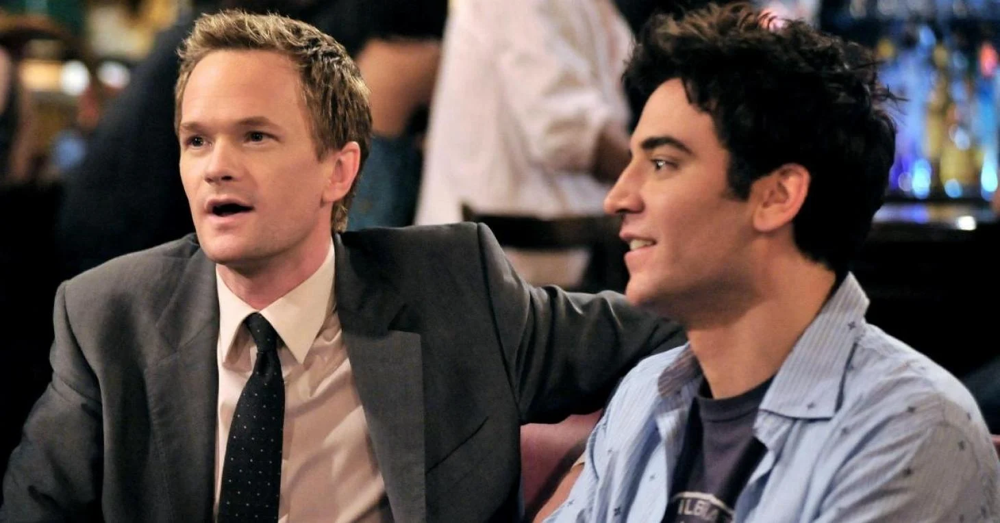

About Ted Mosby
Ted Mosby is a fictionnal character from the How I met your mother show. Troughout the show, he tells his kids the story of how he met their mother, but only really tackles it during the last season. He used to live in New York City, where he had many incredible stories to tell with his friends.
Ted Mosby and Barney Stinson
Ted Mosby's Characteristics
- He has a big heart
- Love always made his life though
- He has been in love with his bestfriend since he met her
Ted Mosby's Friends
Ted Mosby has many friends, but only 4 matter since he has lived crazy adventures with them. Click on the links below to read more about them: